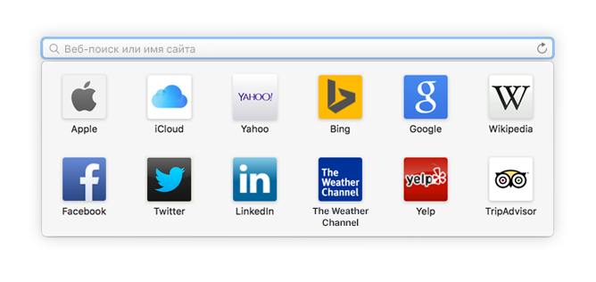
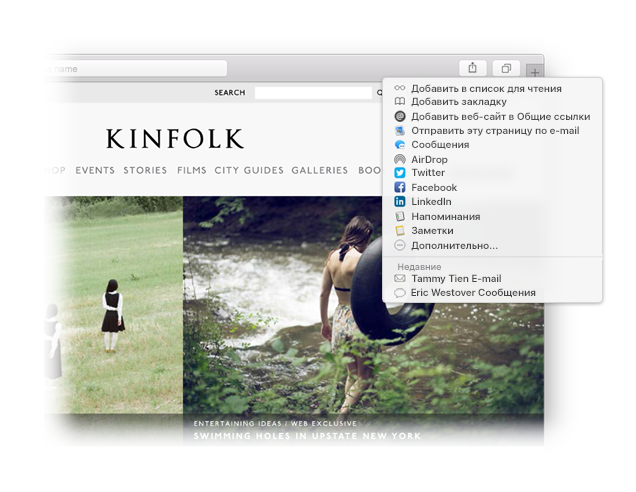

Находите любимые сайты.
Нажмите cмарт-поле поиска, чтобы получить доступ к своим любимым сайтам. Переходите к сайтам простым нажатием.

Закрепляйте сайты булавками.
Перетяните вкладку влево, чтобы закрепить его булавкой, — сайт останется на панели вкладок.

Делитесь ссылками.
Нажмите  , чтобы отправить ссылку по электронной почте или в текстовом сообщении, поделиться ею в Facebook или Twitter, либо добавить в Заметки.
, чтобы отправить ссылку по электронной почте или в текстовом сообщении, поделиться ею в Facebook или Twitter, либо добавить в Заметки.